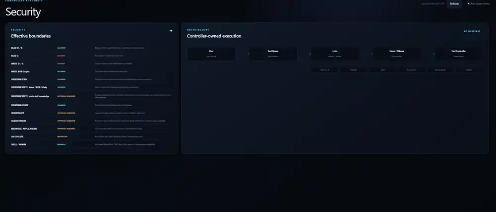

2026 · Active development
Red Queen
A privacy-first local Windows AI assistant built around local inference, persistent memory and controller-gated tools.


What I built
The system combines a desktop control centre, local model inference, persistent conversational memory, Obsidian-backed long-term knowledge and a controlled tool layer for files, applications, browser actions, screenshots, documents and coding workflows.
Security model
Protected actions are controller-owned and approval-gated. The design intentionally limits generic shell/admin access and separates screen analysis from direct action execution.
Why it matters
This project brings together AI orchestration, desktop software, security boundaries, memory design, UI work and local-first infrastructure in one system.